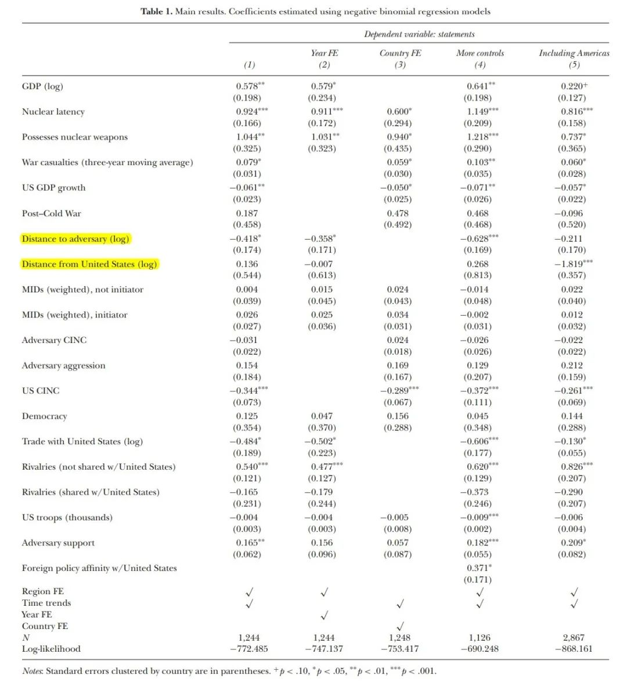
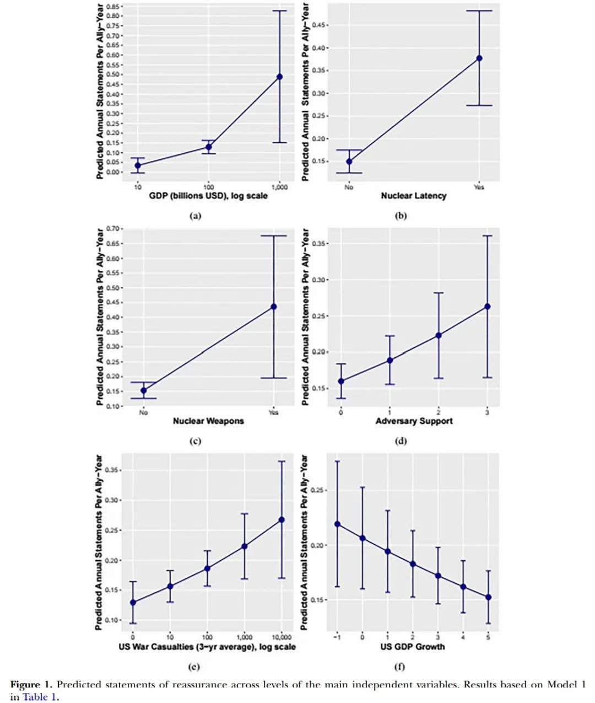
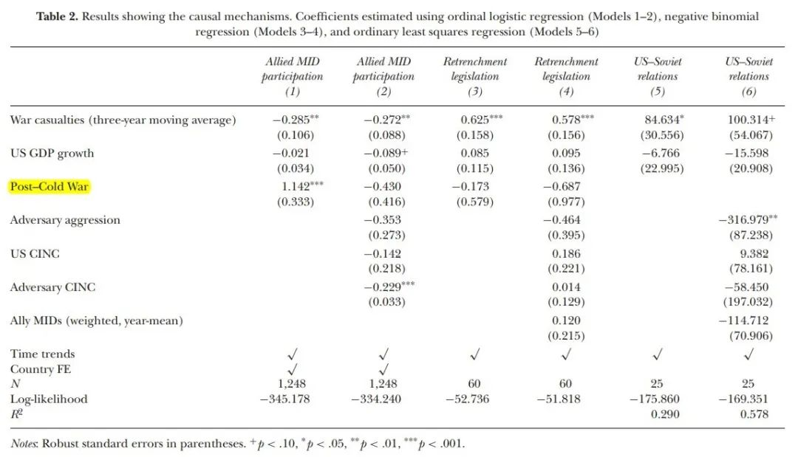
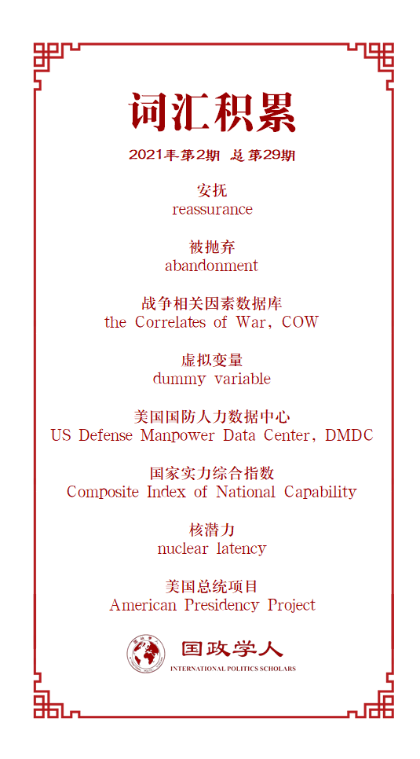

收录于合集

作品简介
【作者】 Brian Blankenship，迈阿密大学助理教授，哥伦比亚大学政治学博士。
【编译】 李源（国政学人编译员，南开大学周恩来政府管理学院硕士生）
【校对】 吴天麟
【审核】 胡瑞琨
【排版】 秦子宁
【美编 】游钜家
【来源】 Blankenship, B. (2020). Promises under Pressure: Statements of Reassurance in US Alliances. International Studies Quarterly , 64(4) , 1017-1030.
【归档】 《国际关系前沿》2021年第2期，总第29期。
期刊简介
《国际研究季刊》（International Studies Quarterly）是国际研究协会的旗舰期刊，由牛津大学出版社每年发行四期，旨在发表与国际研究中重要理论性、实证性、规范性主题相关的领先学术成果。根据Journal Citation Reports的数据，该期刊最新影响因子为2.146。
压力下的承诺：
美国同盟关系中的安抚声明
Promises under Pressure: Statements of Reassurance
in US Alliances
Brian Blankenship
内容提要
不对称同盟中，强国为何以及在何种条件下会安抚弱国？传统观点认为，安抚可能会导致盟友的搭便车行为或者会激怒对手，因而对强国来说，安抚弱小盟友并非明智之举。同时，既有研究低估了不对称同盟中弱国影响强国安全承诺的能力与强国对盟友忠诚的担心。本文认为安抚是同盟控制的重要手段，美国可以利用安抚来阻止盟友寻求同盟的替代选项，防止它们降低对同盟的依赖程度。美国对盟友的安抚意愿受到两个因素影响：第一，（盟友）其他替代选项的可获得性。盟友满足自身安全需求的其他非同盟手段越多，强国越可能对它进行安抚。第二，当强国维持其同盟承诺的资源投入受到限制时，盟友更可能会质疑同盟的可靠性，进而寻求其他的替代选项，因此强国更需要对它进行安抚。利用一个原创的1950年至2010年美国总统安抚声明的跨国数据集，本文检验了这一理论。本文对理解强国如何管理其同盟与弱国如何塑造强国的对外承诺具有启发意义。
文章导读
01
理论：安抚与同盟控制
尽管既有文献注意到了安抚的重要性，并对庇护国如何安抚以及安抚的结果进行了研究，但安抚的原因与在何种条件下庇护国会安抚盟友存在研究不足。
针对不对称同盟中安抚的原因，本文提出了 同盟控制理论(alliance control theory) 。该理论具有四个假定：第一，弱国（扈从国）寻求强国（庇护国）的保护；第二，庇护国更偏好盟友对其保持忠诚并奉行符合其利益的政策；第三，无论是庇护国还是其盟友都无法明确了解彼此意图；第四，盟友遵从庇护国偏好的意愿与对庇护国的依赖程度息息相关。
基于这些假定，本文认为庇护国会积极利用安抚来抵消盟友对“被抛弃(abandonment)”的恐惧，阻止它们寻求其他（满足自身安全需求的）选项，防止它们降低对同盟的依赖。庇护国和扈从国都有理由怀疑对方是否会继续重视和维持它们的同盟关系。扈从国害怕自己被抛弃，而庇护国则担心如果扈从国不再依赖它的保护，扈从国的对外政策可能会更加独立与不受控制。因此，从根本上说， 安抚是庇护国的一种控制手段，目的是“锁定”其影响力。 保护是同盟关系中庇护国给予的回报，如果盟友对这种保护产生怀疑，那么它们很可能会寻求其他选项以满足自身安全需求。从短期来看，这些替代选项会威胁庇护国利益。例如，会诱使对手试图分化同盟。从长期来看，追求和获得替代选项会增强盟友的自主性，进而导致盟友的独立性增强，支持庇护国对外政策的意愿下降。
作者强调，本文解释了庇护国安抚意愿的强度变化，而非安抚政策有效的条件。具体而言，存在两个因素会影响美国安抚盟友的意愿：
第一，盟友的其他替代选项。 安抚发生在同盟“退出”的阴影下。盟友越具有其他有吸引力的替代选项，它们越有能力追求独立政策并与庇护国保持距离，而这正是庇护国所担心的，因而那些盟友更可能受到安抚。这主要包括两种替代选项：其一， 自力更生(self-reliance) ，即盟友自己为自身的安全提供保障。如果盟友的实力足够强大，或者有能力获得核武器，那么它们就可能自己满足自身的安全需求，而不依赖其他国家的保护。其二， 其他替代伙伴 ，即盟友向第三方国家靠近。例如，寻求与对手缓和关系、寻求第三方国家的支持（获取大国的安全保证、与非大国缔结同盟等）。无论是从短期还是长期来看，这些替代选项都会给庇护国带来潜在的不利后果。这种情况下，庇护国有动机安抚其盟友，阻止它们通过这些同盟的替代选项满足自身安全需求。
对此，作者提出以下三个假设：
假设1a：庇护国更愿意安抚拥有更大潜在军事力量的盟友。
**
**
假设1b：庇护国更愿意安抚拥有潜在核武能力或已拥有核武器的国家。
**
**
假设1c：庇护国更愿意安抚与竞争对手关系更友好的国家。
第二，庇护国的资源投入受到限制。 当庇护国维持其同盟承诺的能力受到限制以及面临减少同盟承诺的压力时，盟友更可能会质疑庇护国的保护与可靠性，这种情况下它们更可能寻求同盟的替代选项并追求独立的对外政策。作者强调， 这种承诺受限通过三种机制塑造了盟友寻求同盟替代选项的动机： 其一，导致庇护国更不愿代表盟友介入争端，从而使盟友担心自己在需要时被抛弃；其二，产生削减（同盟）成本和投资国内优先事项的国内压力；其三，鼓励庇护国缓和与对手的关系，这种关系的缓和可能会加剧盟友对“被出卖”的担心。总之，当盟友意识到庇护国不愿意或无法提供保护时，盟友更可能寻求替代选项，而庇护国更有动机进行安抚。
假设2：当面临资源投入受到限制时，庇护国更愿意安抚盟友。
安抚可以采取多种形式，例如军队部署、外交访问与公共声明等。而出于以下几个原因， 本文选取领导人声明这一形式： 第一，声明是安抚最直接的形式。第二，对定量分析来说，声明在测量安抚上更为合适。
02
研究设计
利用1950年至2010年美国安抚声明的跨国数据集，作者检验了以上假设。分析单位为盟友—年份，分析样本包括在4.1版本战争相关因素的正式同盟数据库(the Correlates of War’s Formal Alliances Dataset)中被定义为与美国签有防务协定的所有国家。同时，大多数模型并不包括美国在西半球的盟友。在研究的时间范围内，这些盟友普遍很少受到外部的国家军事威胁，它们亲美立场的主要威胁源自国内因素，而非担心自己在面对外部威胁时美国会放弃保护承诺。经验上，美国采取了外交援助、支持镇压叛乱与直接干预等其他手段，而很少有针对美洲盟友的安抚声明，因此将这些国家纳入样本大多情况下会增加噪声(noise)。
因变量
针对因变量，作者选取美国官员安抚盟友的公开声明这一形式。利用美国总统项目(American Presidency Project)中的总统声明文本，作者对1950年至2010年间美国总统的公开安抚声明进行了编码。以段落为分析单位，作者总结了美国总统在特定年份对每个盟友重申保护承诺的声明数量。如果它们强调以下几个方面，则被编码为是安抚声明：第一，美国保护盟友的意愿或能力的强度；第二，美国维持同盟或维持其在盟国境内或领土附近的存在的意图；第三，同盟或保卫盟友的重要性。
自变量
第一，盟友的其他替代选项。其一，盟友潜在的常规军事力量用其国内生产总值取对数形式衡量。其二，利用一个虚拟变量(dummy variable)来衡量盟友是否具有潜在的核武能力，盟友拥有试验规模的核反应堆但不拥有核武器取值为1，否则取值为0。利用一个虚拟变量来衡量盟友是否拥有核武器。最后，通过两个方面衡量美国竞争对手对美国盟友的支持信号：该盟友是否与俄罗斯或中国结盟、俄罗斯或中国领导人是否在过去三年间访问过该盟友。这些反应了竞争对手与美国盟友的友好关系程度。
第二，美国的资源投入受限。作者用两个变量进行衡量：一是美国在朝鲜、越南、阿富汗与伊拉克战争中的成本。具体而言，作者涵盖了这些战争中美国年度伤亡的三年移动平均值，以衡量美国的战争成本如何随着时间的推移而增加或减少，并对其取对数形式。数据来自美国国防人力数据中心(US Defense Manpower Data Center, DMDC)。战争的成本能够产生压力，迫使从其他的对外承诺中转移资源。二是用美国国内生产总值的年百分比变化来衡量美国的经济受限。
控制变量
作者主要控制了两类变量：外部威胁与盟友对美国利益的战略重要性。前者包括美国及其最强大的竞争对手的国家实力综合指数(Composite Index of National Capability) ，美国盟友与北京、华沙（冷战期间）/莫斯科（冷战后）和华盛顿之间的距离，竞争对手被视为具有敌意的行为，以及某些盟友面临非美国竞争对手国家的威胁程度。后者包括盟友与美国的年度双边贸易水平（经济利益）、美国在盟国境内的驻军数量、盟友的政体类型以及对外政策偏好。
03
**
**
研究结果
研究结果支持了作者的假设，即拥有更强同盟替代选项的美国盟友获得了更多的安抚。此外，当美国面临资源受限，其可靠性受到质疑时，美国会竭力安抚盟友。
表一显示了使用负二项回归模型的结果。模型1是基线模型，模型2包括了年份固定效应，模型3包括了国家固定效应，模型4包括了与盟国对外政策偏好相关的控制变量，模型5包括了样本中美国的美洲盟友。

结果表明，盟友的国内生产总值、核潜力(nuclear latency)、拥有核武器、美国竞争对手的支持程度与安抚声明之间存在正相关关系。具体而言，盟友国内生产总值每增加100%，安抚声明的数量就增加约49%。国内生产总值为100亿美元的盟友几乎未获得安抚声明，而国内生产总值为1万亿美元的盟友每年获得大约0.5的安抚声明（见图一）。拥有潜在核武能力的盟国获得的安抚声明比没有的盟国大约多152%（安抚声明从0.15增长到0.37），拥有核武器的盟国获得的安抚声明比没有的盟国大约多184%（安抚声明从0.15增长到0.44）。竞争对手的支持每提高一个程度，安抚声明就增加18%。然而，在模型3中，它并未在常规水平上达到统计显著性。这可能是因为对样本中的一些国家来说，该变量是高度非时变(time- invariant)的，尤其是在冷战期间很少有美国盟友受到过苏联或中国领导人的国家元首访问。
此外，在美国面临资源受限时，美国总统发表了更多的安抚声明。这支持了假设2。之前三年美国伤亡人数每增加100%，安抚声明的数量就增加约6%，而美国国内生产总值每下降一个百分点，安抚声明也增加6%。图一显示了之前三年的战争伤亡人数从0增加到1万会使安抚声明从0.13增长到0.27，同时美国国内生产总值增长率从负1%增长到5%会使安抚声明从0.22降低到0.15。

同时，作者还对假设2中的因果机制进行了检验。表二显示，战争成本变量与国会立法收缩美国的海外承诺（机制二：国内收缩压力）、美国与苏联之间的积极关系（机制三：与竞争对手缓和关系）呈正相关，与美国代表盟友介入国家间军事争端(Militarized Interstate Disputes, MIDs)（机制一）呈负相关。

稳健性检验
作者对研究结果进行了一系列的稳健性检验，包括加入更多的控制变量（包括美国总统的党派与是否是总统上任的第一年）、在一些模型中涵盖滞后因变量、按年份对标准误进行聚类分析、将样本限定在民主国家（有学者认为民主国家更容易收到美国支持的公开信号）、利用其他代理变量来衡量自变量（用国家实力综合指数替代国内生产总值来衡量盟友潜在的常规军事力量；用战争持续时间与美国的失业率/通货膨胀来衡量美国的资源投入受限）等。
04
结论
本文探讨了在何种条件下美国会试图安抚其盟友。美国利用安抚来阻止盟友寻求同盟的替代选项，尤其是在盟友认为其同盟承诺不可靠时。利用一个原创的美国总统的安抚声明数据集，作者发现，当美国面临资源投入和政治受限使其可靠性受到质疑，以及面对那些拥有更具吸引力的同盟替代选项的盟友时，美国总统更可能会进行安抚。
除了提出和实证检验本文的安抚理论外，本文对理解同盟管理与同盟设计也有所启示。很多学者认为，安抚会鼓励盟友挑战其竞争对手，放弃强制性影响力使得约束和控制盟友更加困难。然而，本文表明安抚盟友实际上是同盟控制的一种手段，这会鼓励盟友更加依赖庇护国而不是寻求自助。就同盟设计而言，在关注弱小盟友如何讨价还价以获得安抚的同时，本文为进一步研究弱小盟友如何讨价还价以塑造同盟条约提供了路径。未来的研究可以涉及盟友如何塑造同盟条约设计以减轻自己被抛弃的风险，以及强国如何适应盟友的偏好以阻止它们寻求其他替代选项。此外，未来的研究还可以关注安抚在何种条件下有效，以及观察美国同盟关系之外的案例以考察结论是否具有普遍性。
译者评述
不对称同盟中，强国在何种条件下会安抚盟友？本文提出了一种同盟控制理论，强调安抚是同盟控制的重要手段，并认为强国对盟友的安抚意愿受到两个因素影响：盟友满足自身安全需求的其他非同盟手段的可获得性、强国维持同盟承诺的资源投入是否受限。基于统计分析，作者检验了这一理论。本文深化了同盟政治中有关安抚行为的研究，对强国安抚弱小盟友的原因进行了解释。同时，本文强调不对称同盟中强国也担心弱国的忠诚，进而揭示了弱国如何影响强国的安全承诺，完善了不对称同盟内部博弈的研究。在特朗普时代，美国的同盟关系呈现不同程度的弱化，而拜登政府如何修复同盟关系值得更多的关注。
词汇整理

文章观点不代表本平台观点，本平台评译分享的文章均出于专业学习之用, 不以任何盈利为目的，内容主要呈现对原文的介绍，原文内容请通过各高校购买的数据库自行下载。

好好学习，天天“在看”
国政学人
支持学术公益与知识传播
微信扫一扫赞赏作者 __赞赏
已喜欢，对作者说句悄悄话
取消 __
发送给作者
发送
最多40字，当前共字
上一页 1/3 下一页
长按二维码向我转账
支持学术公益与知识传播
受苹果公司新规定影响，微信 iOS 版的赞赏功能被关闭，可通过二维码转账支持公众号。